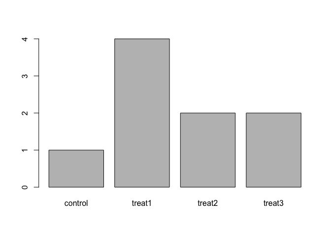

The purpose of this course is to help you learn how to work with your own data in R. In this lesson, we will start to work with data. This is where things get fun! We will begin with an introduction to data frames, and also introduce factors, a data type that is often used for scientific experiments and statistical analyses.
treesThe first data that we will work with, in the dataset trees, is representative of the kind of scientific data that you might work with in R. It contains data on different tree species that were counted in replicate plots in various parts of Eastern Canada. The data is stored as a .csv file: each row has information on a single observation, and the columns represent the following:
| Column | Description |
|---|---|
| Province | Province where the observation was made |
| Site | Site (city) where the observation was made; there are several sites per province |
| Plot | Plot (replicate) number, within site |
| Species | Tree species counted |
| Count | Number of individuals counted |
You should have downloaded trees.csv into the Data folder of your working directory for this class. To load the contents of the file into memory (as a data frame), we will use the function read.csv().
When using this function, we will indicate the file’s location using a relative file path; i.e., the file path is relative to our working directory. To do this, we first need to set the working directory within R. There are two ways to do this:
Navigate to your working directory in the Files tab. (Remember which file is your working directory from the Organization and R basics lesson; it should be the directory that your Data folder is in). Click on the dropdown arrow next to More, then click on Set as working directory.
When you do the above, you will see a command run in your console, using the function setwd() (for set working directory). You can use this function directly to set your working directory. This is useful because you can add this code to the top of scripts so that you - or whoever may be looking at your code in the future - don’t have to re-find the working directory each time you work on your project. For example:
setwd("~/Desktop/IntroR_OnlineCourse")Try both of these approaches. Now, when you ask R to look for a file, it will look for the file within your working directory.
Now that the working directory has been set, we can use read.csv() to read in our data.
trees <- read.csv(file = "Data/trees.csv")This does not print any result to the screen. To check that the file was loaded, you can print the value of the variable trees (try this):
treesThe output is not included here because, as you can see when you run the line yourself, it is quite a long file! This suggests that the data loaded properly. If we want to look at just the first 6 lines of this data.frame, we can use the function head().
head(trees)## Province Site Plot Species Count
## 1 Ontario Ottawa 1 Pinus strobus 11
## 2 Ontario Ottawa 1 Acer rubrum 18
## 3 Ontario Ottawa 1 Cornus florida 28
## 4 Ontario Ottawa 1 Quercus alba 15
## 5 Ontario Ottawa 1 Liriodendrum tulipifera 18
## 6 Ontario Ottawa 1 Tsuga canadensis 30This is the top of the trees data frame. A data frame can be created by reading in tabular data, as we did here, or by using the function data.frame, which we will do in the next lesson. In a data frame, the format is a table where the columns are all vectors that are the same length. Because each column is a vector, all elements in a column are the same kind of data. To demonstrate this, we can use str() to look at the data frame’s structure. This will also give information on the number of observations and the number of variables.
str(trees)Based on the output of str(trees), answer the following questions:
What is the class of the object trees?
How many rows and how many columns does this object have?
How many different species have been counted in this study?
As you can see, many of these columns are made up of integers, but some of them (Province, Site, and Species) are made up of a class called a factor. We are going to spend some time on factors before learning more about data frames. Factors are useful for statistical analyses, but they are not necessarily intuitive. For example, note that although these variables have names that look like character strings, the str() output indicates that they are made up of numbers. This may be confusing at first, but should make more sense after the next section.
Factors are used to represent categorical data. It is important to understand them for statistical analysis and for plotting.
Factors are stored as integers, and have specific labels associated with each unique integer. Although factors look (and often behave) like character vectors, they are actually integers under the hood. Because of this, you have to be careful when treating them like character strings.
Once created, factors can only contain a set of pre-defined values, which are known as levels. By default, R sorts levels in alphabetical order. For example, here is a factor with two levels:
flavors <- factor(c("sweet", "savory", "savory", "sweet"))R will assign 1 to the level "savory" and 2 to the level "sweet". This happens because savory comes before sweet alphabetically. It does not matter that "sweet" is the first element of the factor. You can check the levels of a factor by using the function levels(), and the number of levels of a factor by using the function nlevels().
levels(flavors)## [1] "savory" "sweet"nlevels(flavors)## [1] 2Sometimes you might not care about the order of the levels in the factor, but other times you might want to specify the order because it is meaningful (e.g., “low”, “medium”, “high”) or because it is necessary for a certain type of analysis. Specifying the order of the levels also allows you to compare these levels. For example, here is another factor with levels, without the order specified:
food <- factor(c("low", "high", "medium", "high", "low", "medium", "high"))
levels(food)## [1] "high" "low" "medium"Because the levels are ordered alphabetically, they are not ordered intuitively, i.e., as "low", "medium", "high". We can specify the levels in order:
food <- factor(food, levels=c("low", "medium", "high"))
levels(food)## [1] "low" "medium" "high"But we still can’t do quantitative comparisons (try this yourself):
min(food)However, if we specify that we want the levels to be ordered, we can do quantitative comparisons:
food <- factor(food, levels=c("low", "medium", "high"), ordered=TRUE)
levels(food)## [1] "low" "medium" "high"min(food)## [1] low
## Levels: low < medium < highIn R’s memory, these factors are represented by integers (1, 2, 3), but they are more informative than integers because their names have information: "low", "medium", and "high" are more descriptive than 1, 2, 3. If you wanted to know which level was “low,” for example, the integer data alone wouldn’t tell you. Factors, on the other hand, have this information built in. This can be very helpful in cases where there are many levels, such as in Site in the trees data set.
To convert a factor to a character vector, you can use the function as.character().
as.character(food)## [1] "low" "high" "medium" "high" "low" "medium" "high"You can also convert factors to numeric vectors using as.numeric().
as.numeric(food)## [1] 1 3 2 3 1 2 3If you’re working with a factor where the levels appear as numbers (such as concentrations), it is a little trickier to convert the factor to a numeric vector with the values you expect. For example, here is just such a factor:
concentrations <- factor(c(1, 5, 10, 2))
as.numeric(concentrations)## [1] 1 3 4 2When we try to use as.numeric to convert it to a numeric vector, it doesn’t give us the answer we expect. Why is this? Let’s look at the structure of the factor:
str(concentrations)## Factor w/ 4 levels "1","2","5","10": 1 3 4 2This suggests that "1" is assigned to 1, "2" is assigned to 2, "5" is assigned to 3, and "10" is assigned to 4. Thus, the factor is being converted to numbers based on the levels at which it is stored.
To convert this factor to the vector c(1, 5, 10, 2), we have two options. The first option below, in which the factor is first converted to a character vector, will technically work. However, the second option is the recommended way, as it avoids representing the elements using character strings:
as.numeric(as.character(concentrations)) # Works...## [1] 1 5 10 2as.numeric(levels(concentrations))[concentrations] # Recommended.## [1] 1 5 10 2In the second approach, three important steps occur:
levels(concentrations).as.numeric(levels(concentrations)).concentrations inside the square brackets.Create a factor called “grades” with 10 different grades between A and F, where A is the highest level and F is the lowest level (ignore +’s and -’s, like A+ or C-). Examine the value of the factor and include that output in your answer.
The function plot() can be used to quickly create a bar plot of a factor. For example, for the following factor:
exprmt <- factor(c("treat1", "treat2", "treat1", "treat3", "treat1", "control", "treat1", "treat2", "treat3"))the code plot(exprmt) gives you a barplot of the number of observations at each level, as shown below.
str() to inspect the factor.)
This lesson is based on materials from Data Carpentry’s Data Analysis and Visualization in R curriculum (as of 11 October 2016), which is licensed under the Creative Commons CC-BY. This license allows sharing and adapting materials for any purpose, as long as attribution is given. Generally, the content, concepts, and flow are similar to the original lesson, but the words and some specific examples differ.